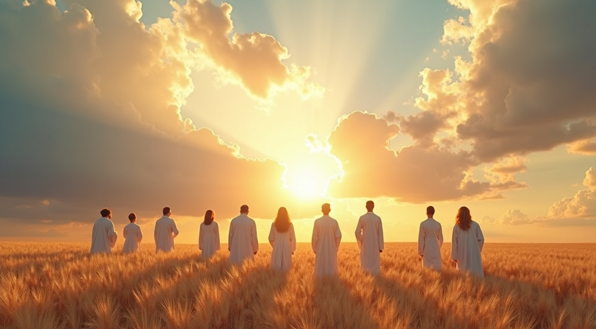
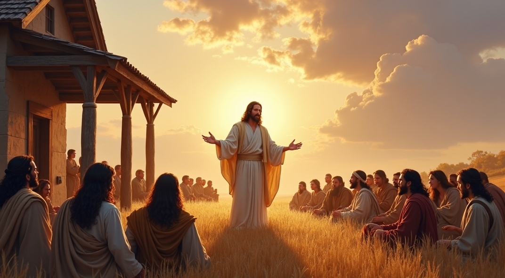
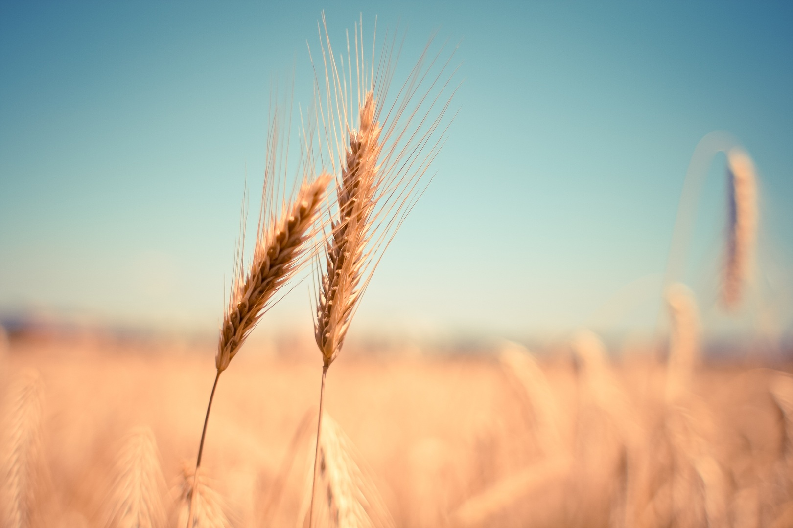
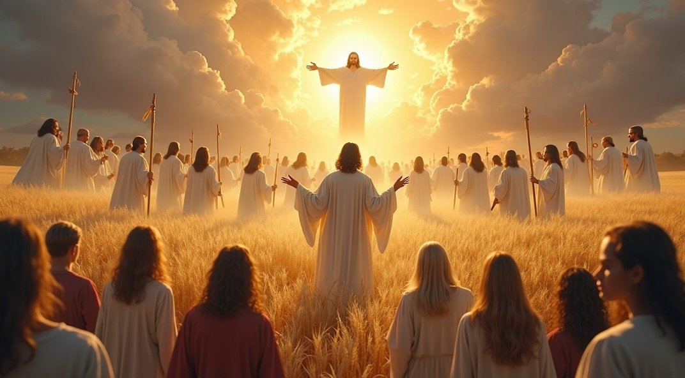
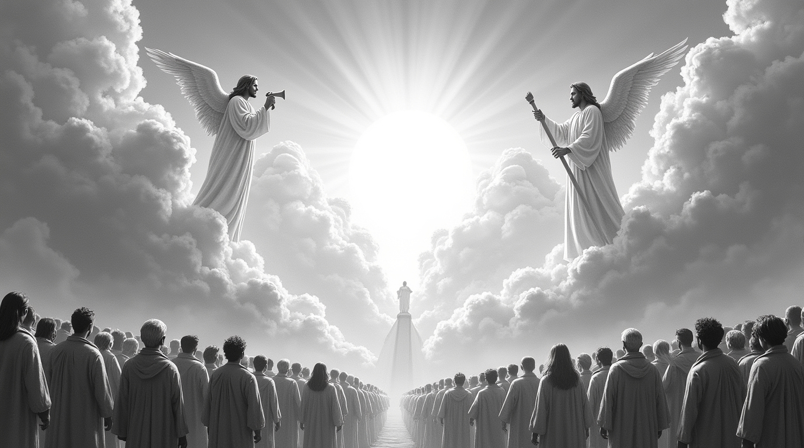

The Harvest of the Earth
From Parables to Reality - Matthew 13 Realized in Revelation 14
Summary
Across fields of wheat and rows of vines, Jesus planted images that would one day bloom into ultimate fulfillment. Matthew 13’s parables—especially the wheat and the tares—unveil divine mysteries about the present age and the coming age with vivid agricultural metaphors. Side by side, good and evil grow—undivided until the harvest. That day, Jesus warned, will expose every hidden truth and determine every eternal destiny.
Centuries later, Revelation 14 reaps those very symbols. In a dramatic shift from parable to apocalyptic vision, the harvest becomes a climactic scene: one like a Son of Man swings a sickle; angels reap the earth; a winepress overflows not with juice, but blood. This is no longer a slow-growing mystery. It is the moment of final judgment, divine intervention, and eternal separation.
Rooted in prophetic anticipation—especially from Joel, Isaiah, and Jeremiah—the imagery of harvest and winepress in Revelation is not random. It is carefully designed to fulfill the “Day of the Lord” tradition found throughout Scripture: a day of reckoning, but also restoration. For the faithful, it is the longed-for moment of reward. For the unrepentant, it is the day of travail.
The heart of the vision is not speculation. It is realization. The time of harvest does not arrive arbitrarily—it comes when the crop is mature. Spiritual fruit—the evidence of inward transformation—is the determining factor. Just as in Jesus’ parables, the dividing line between righteous and wicked is not affiliation, but fruit. What readers see in Revelation is the climactic unveiling of what had been sown throughout the ages.
This unified biblical vision challenges us to think differently about eschatology. The Second Coming, the Day of the Lord, and the final harvest are not disconnected events. They are facets of the same divine moment—one that brings both absolute justice and faithful redemption. Old Testament warnings, Jesus’ teachings, and John’s apocalypse converge into a single narrative thread with eternal consequences.
Far from doom-centered speculation, the eschatological harvest offers unshakable hope. For those who follow Christ and bear witness to His Word, this moment promises rest, reward, and reconciliation. “The one you follow is crucial. The one you worship is decisive,” as expositor Daniel Akin puts it. “The faithful will have rest and reward; the unfaithful face wrath and exclusion.”
Full Article
The Harvest of the Earth
From Parables to Reality-Matthew 13 Realized in Revelation 14
Introduction
In the midst of a society increasingly marked by moral decay, pervasive corruption, and profound degeneration, many find themselves grappling with uncertainty about their role and destiny within the broader social and spiritual order. This widespread confusion often leads to skepticism reminiscent of the doubts expressed by Peter’s contemporaries, who questioned, “Where is the promise of His coming?” (2 Pe. 3:4). Such questions underscore the urgent need for clarity and understanding regarding eschatological hope and the believer’s place in God’s unfolding plan.
Many Christians, understandably, hesitate to engage deeply with eschatological questions, often wary of provoking theological confusion or division within the body of Christ. Yet eschatology rightly taught serves not as a speculative distraction but as a clarifying and unifying call to faithfulness. When approached biblically, it fosters hope, endurance, and urgent discipleship. The “harvest of the earth” imagery in particular reminds believers that a day of reckoning awaits, one in which the true identity of God’s people will be unmistakably revealed. This harvest is not arbitrary, but directly tied to spiritual fruitfulness, evidence of authentic transformation by the Word of the Kingdom.
As Jesus’ parables illustrate, good and evil will coexist until the appointed time, but separation is inevitable and final when the harvest comes. Such a framework not only calls Christians to vigilance and holiness but also offers deep assurance: God knows those who are His, and He will rightly divide according to hearts, not appearances. In the words of Akin, “The one you follow is crucial. The one you worship is decisive... The faithful will have rest and reward; the unfaithful face wrath and exclusion.”1 Eschatological truth, then, is not merely about the end—it is about how we live now in light of that end.
Jesus’ use of agricultural imagery, particularly in describing the coexistence of wheat and tares “until the harvest” (Matt. 13:30), serves as a profound warning and a call to discernment for His followers. Throughout Scripture, such motifs are not merely illustrative but function as vital theological signals, alerting God’s people to the unfolding of His redemptive plan and the certainty of coming judgment (Isa. 41:22-23).
The biblical narrative consistently affirms that God does not intend His people to remain in ignorance regarding future events. As Amos declares, “Surely the Lord GOD does nothing without revealing His secret to His servants the prophets” (Amos 3:7), underscoring the divine commitment to revelation and wisdom. This theme resonates in Jeremiah’s lament over a people who reject the word of the Lord, “Behold, the word of the LORD is a reproach to them; they have no delight in it” (Jer. 6:10), a rejection that, in its historical context, precipitated the destruction of Jerusalem. People’s disregard for prophetic warnings reflects a broader pattern of dismissing uncomfortable truths, to their own peril and loss of restoration.
Revelation 14 stands as a prophetic summons, vividly portraying that decisive day when the history of this world’s fruitfulness reaches its conclusion and a definitive separation is made, enabling the Kingdom of God to be fully revealed in the glory intended from the foundation of creation. Across the ages, Scripture depicts an ongoing struggle in which the good seed, representing the faithful, is consistently challenged—even threatened—by the proliferation of the bad seed. Yet, even in the darkest and most trying moments, the sustaining presence of Christ is assured.2
Through the indwelling power of the Holy Spirit, Christ equips His people not simply to endure but to mature and triumph amid adversity, overcoming the influence of the wicked one. This passage thus offers both a sober warning and a profound encouragement: God’s redemptive intent will prevail, and the power to persevere and bear lasting fruit comes from Christ Himself, faithfully at work in those who belong to Him.
In every generation, the call remains: to heed God’s warnings, embrace His revealed wisdom, and discern the times with spiritual clarity and courage. The gravity of this message is underscored by God’s comparison to a trumpet blast—a sound traditionally associated with alarm and the call to attention against imminent peril.
“Flee for safety, O people of Benjamin, from the midst of Jerusalem! Blow the trumpet in Tekoa, and raise a signal on Beth-haccherem, for disaster looms out of the north, and great destruction.”
– Jeremiah 6:1
As in the time of Jeremiah before the desolations of Jerusalem, God communicated His will and proved His foreknowledge by letting us know the future with many details.
This article argues that the harvest imagery in Matthew 13 and Revelation 14:14-20, when interpreted through a redemptive-historical and symbolic lens, points to a climactic eschatological event—the Second Coming—wherein the maturity of the wheat, evidenced by spiritual fruit, determines the timing of the final separation of humanity. By comparing the parabolic and apocalyptic presentations, this study demonstrates that both passages depict the singular gathering of the righteous and the judgment of the wicked, echoing Old Testament Day of the Lord motifs and underscoring the unity of God’s redemptive purpose across the canon.
The Parables of Matthew 13: Context and Structure
Matthew 13 marks a crucial transition in Jesus’ ministry, as He begins to teach in parables—a direct response to mounting opposition and rejection (cf. Matt. 12:14, 24, 46-50; 13:53-58).3 These parables, addressed to a mixed audience of believers and unbelievers, unveil the mysteries of the Kingdom in a manner that both reveals and conceals, depending on the hearer’s posture. The structure of Matthew 13, with its seven parables arranged in a deliberate sequence, underscores the developmental process of the Kingdom: entrance, growth, and, ultimately, the final separation at the end of the age. In chapter 12, He declared himself to be Lord of the Sabbath and then healed a man in their Synagogue. For this, they (the Pharisees) attributed His power to the devil and then started to plan His destruction.
The theme of separation emerges as central, not only in the parables themselves—especially the Wheat and Tares and the Dragnet—but throughout Matthew’s Gospel, as illustrated in the following passages:
| Scripture
Matthew 5:19-20 Matthew 7:13-14 Matthew 7:15-20 Matthew 7:21-23 Matthew 22:11-14 Matthew 24:45-51 Matthew 25:1-13 Matthew 25:33-34, 41 |
Separation
Truthful teachers vs. others Narrow vs. wide gateway Good vs. evil fruit Doers of the Father’s will vs. others Properly attired guests vs. others Faithful vs. unfaithful servants Wise vs. foolish virgins Sheep vs. goats |
This pattern of separation is not merely about distinguishing the “good” from the “bad,” but about discerning those who truly understand and embody the values of the Kingdom as they await its ultimate fulfillment.
The Shift in Jesus' Teaching and Revelation
- Matthew 12:14 – "And Jesus said to them, “Then the Pharisees went out, and held a council against him, how they might destroy him.”
- Matthew 12:24 – “But when the Pharisees heard it, they said, this fellow doth not cast out devils, but by Beelzebub the prince of the devils.”
- Matthew 13:57 – “And they were offended in him. But Jesus said unto them, A prophet is not without honor, save in his own country, and in his own house.”
Thus, the Parables of the Kingdom in Matthew 13 are best understood as an integrated unit, collectively unveiling multiple facets of the Kingdom in response to the diverse interests and spiritual conditions present among Jesus’ audience. These parables operate in distinct stages—entrance, growth, and final separation—offering a developmental framework that not only reflects the unfolding nature of God’s redemptive plan but also challenges readers to reflect on how their own posture toward the Kingdom may change over time.
The three phases are sowing time, growing time, and harvest time. This study will focus on the final sorting and separation, two concurrent themes highlighted in these parables. The concept of separation emerges as a fundamental prerequisite for entry into the Kingdom of God.
It is important to recognize that Matthew’s motif of separation transcends a simplistic dichotomy between the overtly righteous and the obviously wicked. Rather, as the preceding examples illustrate, those subject to separation are individuals who have either demonstrated or were expected to demonstrate a genuine grasp of the ethical demands and responsibilities inherent in awaiting the consummation of God’s Kingdom. The parables thus underscore that accountability is not limited to external affiliation or identity but is measured by one’s response to the revealed will of God and the lived expression of kingdom values during the “growing season” that precedes the final harvest.
Matthew 13 presents seven parables of the Kingdom of Heaven. These can be separated into the Sower as the introductory parable, followed by three pairs of parables. The first and last parables are paired, focusing on the same main point, the final separation at the end of the age. Enclosed between these parables of eschatological judgment are two pairs of short one-point parables. The first pair emphasizes the growth of the Kingdom in the mustard seed (Matt. 13:31-32) and the leaven (Matt. 13:33-35). Followed by the second pair that emphasizes the ultimate value of the Kingdom, the hidden treasure (13:44), and the pearl of great value (13:45-46).4
These two pairs of short one-point parables can also be seen as interludes between Jesus' main points; the tares and dragnet parables serve as bookends to the narrative as they focus on the final judgment. Having this order in the account causes the focus to fall on the separation and last judgment in the second and last of the seven parables.5 Thus, the theme of separation at the culmination of the age—illustrated through the parable of the tares (13:41-42) and the dragnet (13:50-51)—emerges as a central focus in this chapter. Jesus subtly emphasizes this concept further in His explanation of parables, which serve either to unveil or to obscure the mysteries of the Kingdom of Heaven.6
“And another angel came out of the temple, calling with a loud voice to him who sat on the cloud, ‘Put in your sickle, and reap, for the hour to reap has come, for the harvest of the earth is fully ripe.”
– Revelation 14:15
Comparative Focus: Divine Judgment and Eschatological Separation
Both Matthew 13 and Revelation 14 converge on the theme of divine judgment at the consummation of the age, yet each narrative highlights distinctive facets of God’s ultimate engagement with humanity. While Matthew’s parables employ agricultural metaphors to illustrate the gradual development and eventual separation of the righteous and the wicked, Revelation’s apocalyptic vision intensifies these motifs, presenting the harvest as an imminent and climactic event.
This study undertakes a careful comparison of these two key harvest passages, with particular attention to their shared emphases:
- Angelic Involvement: Both texts underscore the role of angels as agents of separation and judgment, reinforcing the seriousness and universality of the event.
- Timing of Judgment: The narratives align in portraying the harvest as occurring at the divinely appointed “end of the age,” though the literary tone and immediacy differ.
- Kingdom Implications: Each passage elucidates the implications for the Kingdom of God, emphasizing both the hope of the gathered righteous and the warning of exclusion for the unprepared.
The application becomes especially poignant as the imagery of the harvest—first articulated in Jesus’ parables and later re-envisioned in John’s apocalyptic vision—signals the impending fulfillment of God’s redemptive purposes. The final harvest is not merely a distant metaphor but a reality poised to unfold, as seen in the sorting and separation depicted in the wheat and tares, the good and bad fish, and the wise and foolish virgins (Matt. 13:24-30, 36-43, 47-52; 25:1-13). These parables collectively serve as both a summons to readiness and a sober reminder that the ultimate distinction between good and evil will soon be manifest for all.

The Wheat & the Tares
A foundational observation is that Jesus’ use of parables fulfills ancient prophecy, most notably Psalm 78:2: “I will open my mouth in a parable; I will utter dark sayings from of old.”7 This psalm, composed centuries before Jesus’ ministry, provides a window into how parabolic teachings might be received, especially by those unreceptive to spiritual insight.
As Blomberg observes, parables are not strict allegories in which every detail is symbolic, but rather stories in which several significant elements function metaphorically, inviting the attentive listener to discern a deeper, often multi-layered meaning beneath the surface narrative. In this sense, the parables operate on more than one level, elucidating key aspects of the Kingdom of God and its outworking in history. The explanations offered by Jesus illustrate this pedagogical strategy: each character and feature in the parable is carefully assigned a specific role, representing profound theological truths and demanding thoughtful engagement from the hearer.8
Parables in Jewish Tradition and Pedagogy
Jesus employed parables as an intentional pedagogical strategy to unveil multiple dimensions of the Kingdom of Heaven. In the broader context of Jewish teaching, parables were a familiar and respected communicative form, functioning as allegorical narratives that conveyed profound theological truths through rich symbolism and details requiring thoughtful interpretation.9 A prime example from the Hebrew Scriptures is the story of Prophet Nathan’s “ewe lamb,” widely acknowledged by scholars as a parabolic narrative. Nathan’s account was deliberately crafted to provoke a moral response in David, while initially obscuring its true significance. This example illustrates how parables can simultaneously reveal and conceal truth depending on the heart of the listener.
The parables of Jesus often stirred within certain hearers an increased longing to draw nearer and understand more, even as others remained indifferent or unresponsive. This dynamic reflects a broader reality: individuals typically are drawn to leaders who engage them on a deep, personal level, while disregarding voices that seem distant or irrelevant, regardless of the substance they offer. In this way, the parabolic method both invites genuine seekers and sifts those unwilling to pursue deeper meaning.
The Narrative Context and Structure of Matthew 13
The narrative opens with a telling scene in which Jesus’ relatives seek to speak with Him (Matt. 12:46-50), a detail the text carefully notes by emphasizing that they remain outside. This subtle narrative choice underscores the distinction Jesus makes regarding true kinship, not merely biological ties, but spiritual allegiance. Jesus then steps out of the house to teach in parables, embodying through His actions the very message He imparts. This movement from inside to outside serves as a vivid enactment of the parables’ central theme: the division between those who belong to the Kingdom and those who do not.
Notably, Jesus’ own family did not immediately embrace His ministry; only Mary and a few relatives are recorded among the one hundred and twenty gathered in the upper room at Pentecost, with His half-brother James converting later. The parables begin by addressing the varied responses to the Word of the Kingdom, drawing a clear line between insiders and outsiders—those who hear and receive, and those who do not.
- Matthew 13:1, 3 – “The same day went Jesus out of the house, and sat by the seaside… And he spoke many things unto them in parables.”
- Matthew 13:36 – “…Jesus sent the multitude away and went into the house: and his disciples came unto him, saying, Declare unto us the parable of the tares of the field.”
Key Theological Point in the Parables
In Mark 4, Jesus teaches parables to a large group outside a house. Mark did not include all parables as Matthew did. Nevertheless, he was aware of them (Mark 4:2). In his version of the explanation, Mark’s Gospel includes a notable warning. Jesus informs that the parable of the Sower is the fundamental key to grasping the essence of the following parables.10 However, before explaining the Sower, Jesus prefaces the explanation with a very revealing inquiry to the disciples. He asks, “Know (Gr. εἴδω Eidō, understand) ye not this parable? And how then will ye know (Gr. γινώσκω Ginōskō, gain knowledge) all parables?” (4:13).11 These are very revealing questions. They imply that understanding the first parable is critical to understanding and gaining knowledge from all parables.
The Unified Purpose of the Parables
With this key context, let us consider Matthew 13, which presents a broader list of parables of the Kingdom. These parables can be applied and studied individually as each uncovers great truths. However, they can also be understood as a whole unit that reveals distinct aspects and stages of an individual’s entrance, growth, and outcome from the Kingdom.12 The Sower focused on the receptiveness of people to hear and receive the Word of the Kingdom (v.19), which decides the seed's growth and fruit-bearing realized potential.
Alternatively, the parable of the wheat and the tares is focused primarily on the good seed and the timing of the harvest between the initial sowing and final reaping.13 The importance of this parable is enhanced when Jesus takes the time to explain it at the disciples' request.
Matthew 13 offers a profound tapestry of parables that collectively unveil the character and functioning of the Kingdom of Heaven. Within the immediate literary and theological framework of this chapter, the Kingdom of Heaven is best understood in terms of inaugurated eschatology. It marks the onset of God’s definitive reign, ushered in during the present Church age. This period extends from the ministry of John the Baptist (cf. Mark 4:11)—who signals the turning point in redemptive history—up to that climactic moment when all earthly kingdoms are decisively brought under the authority of the Son of Man, as depicted apocalyptically in Daniel 7:26-27. This is the end of the (or this) Age.
Importantly, this present manifestation of the Kingdom is not to be equated with the yet-future realities of the Millennial Kingdom, the New Jerusalem, or the New Creation. Rather, Matthew’s parables point to a kingdom that has decisively broken into history even as it awaits its eschatological consummation.
This perspective is grounded in the explanation of the Sower (Matt. 13:19), where the seed is explicitly identified as the Word of the Kingdom. Here, it must be noted that the Kingdom’s advance is mediated through proclamation, and the current age is thus marked by a period of responsive opportunity. The Word Sown demands an immediate and decisive response: authentic hearing and deliberate understanding are required. Only those who intentionally embrace and internalize the Kingdom’s message are expected to bear spiritual fruit, making visible—even now—the transformative, sovereign power of God at work amid history.
The Sequence of Parables
In His explanation, Jesus offers a distinctly dual reading of the parable of the tares. Whereas the parable of the Sower features four types of soil that represent differing human responses to the message of the kingdom, the parable of the tares is structured around four strategic contrasts that highlight its theological depth and eschatological significance. These paired elements provide a framework for understanding both the present reality and the coming judgment:
Dual Reading in the Parable of the Tares14
- Two main characters - the Householder > the enemy.
- Two groups of people – wheat > tares.
- Two destinies – the Kingdom > the furnace of fire.
- Two secondary characters – the workers ≤ the harvesters.
The Householder and the Enemy
In Jesus’ exposition of the parable, the householder represents Christ himself, whose mission is to broadcast the Word of the Kingdom with universal scope. This global dissemination of the gospel is not only central to Jesus’ earthly ministry but is depicted throughout the Gospels as a necessary condition to be fulfilled prior to the Second Coming (cf. Matthew 24:14).
In direct contrast stands the enemy—the devil—whose nefarious activity calls to mind the earlier description in 13:19 from the parable of the Sower: “then cometh the wicked one, and catcheth away that which was sown in his heart.” As the adversary of all that is genuine, the devil assumes a posture of imitation, mimicking the actions of the householder by sowing what is counterfeit among the good seed. This insidious imitation is not mere opposition; it is a deliberate attempt to infiltrate the community of faith and to plant deceptive elements within the Church. Such counterfeit sowing renders the field of the world a place of concealed conflict, where the genuine and the spurious coexist until the time of harvest makes their true identities manifest.15
This dual activity reveals a deeper eschatological and ethical tension, reflected in Jesus’ audience. The Kingdom advances despite (and even through) the presence of opposition, and ultimate discernment awaits the final act of divine separation.16
And this gospel of the kingdom will be proclaimed throughout the whole world as a testimony to all nations, and then the end will come.
– Matthew 24:14
The Field Is the World
In His interpretation of the parable, Jesus plainly identifies the field as “the world” (Matt. 13:38), offering a straightforward yet theologically rich framework for understanding the kingdom's present operation. The field is the environment into which the good seed—the children of the Kingdom—is sown for the purpose of growth and witness during the present age. Just as wheat must remain in the ground until the time of harvest, believers are called to live and labor within the world until the appointed time when God’s redemptive work reaches its fulfillment.
Though the field is the place of growth, it is not the final home of the wheat. The church, while living in the world, maintains a pilgrim identity, called not to retreat from the world but to engage it through faithful gospel proclamation. This missionary mandate is echoed throughout the New Testament: the Great Commission commands believers to:
- Mark 16:15 – "go into all the world and preach the gospel to every creature"
- Matthew 28:19 – "make disciples of all nations"
- Luke 24:47 – to proclaim "repentance and forgiveness of sins... to all nations, beginning at Jerusalem"
Before His ascension, Jesus reiterated this global vision, commissioning His disciples to be His witnesses “in Jerusalem, and in all Judea and Samaria, and to the ends of the earth” (Acts 1:8). In light of the parable, these commissioned witnesses can be understood as the workers in the field—those who, having been born into the Kingdom, are now entrusted with the sowing of the Word of the Kingdom. The Church, therefore, is not merely the gathering of the good seed but the active agent God uses to spread it throughout the world, fulfilling its mission until the time of the final harvest.
The Good Seed
In the parable of the wheat and the tares, the householder deliberately sows the good seed, which Jesus explicitly identifies as “the children of the Kingdom” (Matt. 13:38). When read alongside the parable of the Sower (Matt. 13:1–23), this imagery connects fruitfulness with the heart’s receptiveness to the Word of the Kingdom. As Matthew 13:19 notes, true understanding of the message is what allows the seed to take root and produce a lasting harvest.17 Thus, the presence of fruit becomes the ultimate evidence of authentic spiritual transformation.
If the good seed represents genuine believers—those who have rightly responded to the gospel—then by contrast, the tares symbolize those who appear outwardly similar but lack true saving faith and covenantal inclusion.18 These may include false teachers, deceived individuals, or institutions that mimic the church without embodying the gospel’s substance. This sobering implication draws a clear line between external appearance and internal authenticity.
Because good seed is expected to produce good fruit, it becomes essential to define what Scripture describes as “fruit.” A biblical perspective does not reduce fruitfulness to mere religious activity but encompasses a life marked by visible transformation, spiritual maturity, and faithful obedience. The nature of this fruit will be explored further, as Scripture consistently affirms that genuine Kingdom citizens are known by the fruit they bear.
Examples of fruitful Christians19
- They are soul winners. ⮕ Romans 1:13
- They have fruit unto Holiness.⮕ Romans 6:22
- Have a duty to fulfill and share, financial giving. ⮕ Romans 15:27-28
- They show the fruit in love, peace, longsuffering, gentleness, goodness, faith, meekness, and temperance. ⮕ Galatians 5:22-23
- They are fruitful into good works (rooted in understanding and knowledge). ⮕ Colossians 1:10
- Are worshipers who continually praise God. ⮕ Hebrews 13:15
The Tares
Tares, translated from the Greek zizanion, refer to a noxious weed closely resembling wheat during the early stages of growth—most likely darnel, a well-known plant in the ancient world. At first glance, darnel cannot easily be distinguished from genuine wheat. However, while wheat yields nourishing grain, darnel’s produce is not only inedible but potentially harmful, even poisonous. The distinction between the two becomes apparent only when the respective crops begin to bear fruit—an observation that aligns with the parable’s emphasis on the necessity of waiting until harvest time to expose the true nature of each plant.20
This visual metaphor reveals a deeper spiritual reality within the Church: the presence of counterfeit believers who closely resemble the genuine—but lack a true relationship with Christ. Such individuals, like the tares, may even flourish for a time unnoticed, precisely because of their external similarities to authentic disciples. The parable offers both pastoral comfort and theological clarity: while Satan may infiltrate the visible community of faith, he cannot uproot those who truly belong to the Kingdom.
- “For such men are false apostles, deceitful workmen, disguising themselves as apostles of Christ. And no wonder, for even Satan disguises himself as an angel of light.” – 2 Corinthians 11:13-14 ESV
- "But false prophets also arose among the people, just as there will be false teachers among you, who will secretly bring in destructive heresies, even denying the Master who bought them, bringing upon themselves swift destruction.” – 2 Peter 2:1 ESV
- “For certain people have crept in unnoticed who long ago were designated for this condemnation, ungodly people, who pervert the grace of our God into sensuality and deny our only Master and Lord, Jesus Christ.” – Jude 1:4 ESV
Importantly, the distinction between true and false believers will not always be apparent during times of growth. The workers, earnest though they are, are not equipped to make this separation prematurely. It is only when fruit becomes visible—when the outward life reflects the inner reality—that true identities will be revealed. Thus, the parable not only portrays the danger of infiltration but also sets the stage for the eschatological separation administered by divine agents at the end of the age. This is a parable of patience, discernment, and future judgment, calling the Church to vigilance without presumption.
Two secondary characters.
In addition to the primary figures of the householder and the enemy, Jesus introduces two secondary groups that play distinct but meaningful roles in the parable: the workers and the harvesters. The workers represent those who labor under the authority of the householder, not in executing judgment, but in participating faithfully in the ongoing work of the Kingdom. Unlike the harvesters, the workers are not portrayed as sowing or reaping. Rather, their role appears oriented toward watchfulness, stewardship, and nurturing, as evidenced by their attention to the growing crop and their recognizable concern when the tares emerge.
“Then he said to his disciples, 'The harvest is plentiful, but the laborers are few. Therefore, ask the Lord of the harvest to send out workers into his harvest.”
– Matthew 9:37-38 ESV
Notably, their exclusion from the direct sowing and reaping helps clarify the theological point at the core of the parable. Jesus shifts the responsibility for both sowing and judgment away from human hands, placing the focus entirely on the two main characters: the Son of Man (the householder) who plants the good seed, and the devil (the enemy) who sows the counterfeit. By doing so, the parable removes any implication that the workers are to blame for the existence of the tares. Instead, their role lies in participating in the growth process, consistent with other teachings about laborers in God’s field (cf. Matt. 9:37-38).
Though that verse speaks about the evangelistic task, it brings into focus the indispensability of faithful Kingdom workers who proclaim, shepherd, and disciple others during the growing season. Their work, however, must be exercised with patience and discernment, as spiritual maturity and fruit-bearing require time, cultivation, and grace.21 Fruit-bearing requires a growing and nurturing season.
The workers in the parable observe that both wheat and tares are growing together, and understandably ask if they should begin the separation process. The householder’s response is striking and instructive: the task of separating the wheat from the tares belongs to the harvesters—a group clearly identified in Jesus’ interpretation as the angels (Matt. 13:39, cf. Rev. 14:15-19). While the workers are engaged in the ongoing Kingdom ministry, they are not entrusted with the final act of judgment. That role belongs entirely to God’s messengers, operating under His perfect wisdom and justice.
The harvesters (reapers) are the angels. This is the job given specifically to them. The workers thought this was part of their duties. They did not understand that this was the final judgment and punishment. Historically, this task was only given to angels. An example is the history of Sodom and Gomorrah. Angels are the ones who carry out the sentence after the angel of the Lord speaks with Abraham. The household workers cannot fulfill this task because, as the householder pointed out, they might “uproot the wheat with them” (Matt. 13:29 NET). Only God can search the hearts of people and know who is truly His (See 1 Sam. 16:7, Jer. 17:10, 1 Kings 8:39, Psa. 44:21, 2 Tim. 2:19, John 10:14, and Rom. 8:27, 2 Tim. 2:19).
This structured contrast, carefully built by Jesus, invites reflection not only on the certainty and necessity of divine judgment but also on the importance of humility, discernment, and patience while the Kingdom continues to grow amid a mixed field. It is a call to vigilance in ministry—faithful labor rooted in grace—paired with the proper trust in God’s ultimate justice.

The Harvest in Revelation 14:14-20
The harvest imagery in Revelation 14 offers two distinct but closely related eschatological visions, each contributing to a comprehensive picture of divine judgment at the end of the age. Much like the dual framework evident in the parables of Matthew 13, Revelation presents two types of agricultural yield: grain and grapes.
These correspond theologically to the good wheat and the corrupt counterfeit, highlighting both the final gathering of the righteous and the inevitable judgment of the wicked. Positioned at a key juncture in the Apocalypse, this passage serves as a hinge between the call to perseverance (Rev. 14:12) and the unfolding judgments that follow in chapters 15 and 16.
The literary and theological depth of this passage is heightened by its intertextual connections to Old Testament prophetic texts, most notably Joel 3:13 and Isaiah 63:2-3.22 The reference to reaping with a sickle echoes Joel’s call to judgment: “Put in the sickle, for the harvest is ripe” (Joel 3:13), a passage originally addressed to the nations gathered in the valley of decision.23 These echoes serve to root Revelation’s vision in a deep prophetic tradition, reinforcing its claim to finality and divine inevitability.
Verse 14 begins with a theophanic vision: “one like a Son of Man” seated on a white cloud. Within the wider biblical canon, and especially in the Synoptic tradition (e.g., Matt. 24:30; Mark 13:26).24 This phrase unmistakably refers to Jesus, drawing from the imagery of Daniel 7:13. His appearance on the clouds is a consistent symbol of authority and divine presence, often associated with the final judgment. This identification strengthens the hermeneutical link between Revelation 14 and the eschatological parables of Jesus, confirming that it is indeed Christ who presides over the harvest.
Isaiah 63 emerges as a richly theologically layered passage. It opens with an image of divine warrior-judgment—blood-soaked garments and the trampling of the winepress—an image mirrored in Revelation 14:19-20. Yet Isaiah does not end in wrath; it swiftly transitions into a reflection on God’s compassion and covenant love for His people (Isa. 63:7). This movement from judgment to mercy, wrath to redemption, resonates with the Johannine portrait of a Lamb who both judges the nations and redeems His saints—a tension that Revelation sustains throughout its dramatic narrative arc.
Revelation’s addition of the grape harvest and vivid winepress imagery does more than widen the metaphorical scope—it strategically weaves a theological triangulation linking Jesus’ harvest parable, apocalyptic fulfillment, and the Old Testament’s Day of the Lord tradition. This triadic connection underscores the unity and depth of biblical eschatology.
By weaving together the themes of gathering, judgment, and consummation, the text highlights a unified eschatological expectation, where the winepress signifies both the fullness of divine wrath and the decisive realization of God’s purposes foretold by the prophets. This intricate pattern invites readers to discern how Revelation draws upon and fulfills the harvest motifs of Jesus’ teaching and the prophetic declarations about the Day of the Lord, underscoring the coherence and urgency of the biblical witness.
And the earth was reaped...
Revelation 14:15-16 focuses on a decisive moment: the Son of Man steps in, initiating the harvest of the earth’s grain—the good seed, emblematic of the righteous in Matthew 13. While the figure on the cloud supervises this gathering, he delegates the labor to his reapers, the angels. The Gospel narrative is clear: “The Son of Man will send out his angels, and they will weed out of his kingdom everything that causes sin,” removing the corrupt seed from the field (Mat. 13:41).
This marks a sharp duality, a separation of destinies for the two harvests. Both parable and apocalypse share an unyielding outcome, the angels: “will throw them into a furnace of fire,” underscoring the irreversible end for the wicked (Mat. 13:42). Revelation deepens the drama, introducing an angel endowed with power over fire. At his command, another angel is told, “thrust in thy sharp sickle, and gather the clusters of the vine of the earth,” signaling a swift and total execution of judgment (Rev. 14:18).
The sequence is forceful and final: the wheat brought safely in, the tares and grapes doomed to destruction. In tension and clarity, the text presents a binary finality, as striking as any market’s closing bell.
These passages paint a vivid description of the consummation of history, culminating in a decisive act of judgment, separation, and gathering at the close of the age. The narrative signals a climactic moment of divine discernment and in-gathering that immediately precedes the full inauguration of God’s Kingdom on earth. The prophet Daniel encapsulates this unfolding eschaton through a series of symbolic visions, each offering a distinct vantage on the ultimate transformation of history.
Foremost among these is Nebuchadnezzar’s statue vision in Daniel 2:44, a revelation Daniel pointedly anchors in the “latter days” (Dan. 2:28). In this vision, the Kingdom of God asserts itself with sovereign finality, abruptly disrupting the cycle of world empires. The imagery centers on a stone “cut without hands” that demolishes the statue's feet—symbolizing the fragmentation of earthly kingdoms. This stone then expands, becoming a “great mountain, and filled the whole earth” (Dan. 2:35), a metaphor for the Kingdom’s humble beginnings and its ultimate, comprehensive reign over all creation. The dream’s interpretation underscores the Kingdom’s guaranteed permanence, charting its path from inception to global fulfillment.
Comparative Analysis: Matthew 13 & Revelation 14
This metaphor of separation, gathering, and judgment extends from the narrative’s very inception—in Adam’s creation “from the dust of the ground” (Gen. 2:7). The introduction of the counterfeit sowing begins immediately with the serpent’s subtle distortion of God’s Word: “Has God indeed said?” (Gen. 3:1). Since the Fall, God’s redemptive purpose has been to implant His Word within humanity, cultivating a spiritual harvest marked by genuine fruitfulness destined for gathering.
From the beginning, then, the biblical storyline has been guiding us toward a climactic harvest. God’s original intention in creation was not merely to populate the earth but to see fruit-bearing, spiritually mature image-bearers fill and subdue the creation under His lordship (Gen. 1:28). This motif of spiritual growth—rooted in the implanted Word (cf. James 1:21)—builds progressively throughout Scripture and finds ultimate fulfillment in Revelation 14: the “final harvest,” in which both the righteous and wicked reach the fullness of their respective destinies.
A further contrast between the texts of Matthew 13 and Revelation 14 lies in the timing and tone of the harvest. In Jesus’ parable, we observe divine restraint and patience—even a delay in judgment. The workers are instructed not to uproot the tares immediately, lest the wheat be harmed in the process (Matt. 13:29). Growth must run its full course. However, in Revelation 14, once that maturity is reached, there is no hesitation. Swift and decisive action is commanded: “Put in your sickle and reap, for the harvest of the earth is ripe” (Rev. 14:15). As Beale emphasizes, the apocalyptic genre of Revelation conveys an intensification of judgment language: what Jesus hinted at in parables finds full eschatological realization here through graphic imagery and angelic urgency.25
The Central to both passages is the theme of ripeness or maturity as the trigger for judgment—an eschatological timing marker not to be overlooked. In Matthew 13:30, Jesus says, “Let both grow together until the harvest,” after which the angels gather the tares to be burned and the wheat to be stored. Revelation echoes this double judgment with precision. First, we are told that “the harvest of the earth is fully ripe,” signaling the readiness of the righteous (Rev. 14:15). Then, in rapid succession, another angel is commissioned to gather “the clusters of the vine of the earth, for its grapes are fully ripe” (Rev. 14:18 ), this time, the wicked. As Osborne points out, what links these passages canonically is their shared vision of finality: there is no third category, no middle ground, only good seed or bad, righteous or wicked.26
In sum, these harvest texts demonstrate the moral and spiritual dualism that consistently emerges across Scripture’s eschatological horizons. They affirm the necessity of spiritual growth, the inevitability of final judgment, and the exclusive destinies available to humanity. The image of sowing and reaping, when traced from Eden to Armageddon, reveals not only the culmination of redemptive history but the enduring coherence of the biblical narrative: a field prepared, a crop matured, and a glorious harvest gathered by the Lord of the Harvest Himself.
The Day of the Lord and Eschatological Harvest
The “Day of the Lord” remains a subject that has frequently suffered from vague or even misleading theological definitions. Much of the confusion arises from misaligned expectations—just as many missed the nature and timing of Jesus’ first coming, so too have interpreters misjudged what the Day of the Lord would and would not entail, often conflating immediate hopes with eschatological realities. Nowhere is this motif more prominently developed than in the prophetic declarations of Isaiah, where the Day of the Lord is portrayed as a period of both judgment and the unveiling of God’s ultimate purposes.
One crucial clarification must be emphasized: the timing of these events carries significant theological weight. Scripture reveals that the “harvest of the earth”—the final separation and gathering—is inextricably bound to the outpouring of God’s wrath, and that divine wrath itself is an essential characteristic of the Day of the Lord. In this light, the Second Coming of Christ emerges not simply as the climactic fulfillment of New Testament hope, but as the very dawn of the Day of the Lord—a moment when God’s promises of judgment and restoration reach their consummate expression. Such a perspective brings coherence to both the prophetic and apocalyptic witness of Scripture, reminding readers that God’s purposes unfold with perfect timing according to His sovereign plan.
The Climactic Moment of Divine Intervention, Judgment, and Restoration
The “Day of the Lord” emerges in Scripture as the pivotal moment in which God decisively intervenes in human history, bringing both judgment upon the wicked and restoration for the righteous. In Johannine apocalyptic vision, especially in Revelation 14, this day is portrayed as the final harvest—an event rooted in Old Testament prophecy but intensified through Christological fulfillment. Beale emphasizes that the language of the harvest being “ripe” signals not merely a chronological endpoint but a spiritual maturity: “what was green and growing has reached maturity, and has now lightened in color as it dries out, signifying that the harvest is due,” echoing Jesus’ own teaching in Matthew 13 and underscoring the eschatological culmination of redemption and judgment.27
This climactic day and the biblical theme of separation, where the righteous are gathered and the wicked are consigned to destruction, with no “third category.” In Revelation, the urgent command to the Son of Man to reap, “for the hour to reap has come, for the harvest of the earth is fully ripe,” corresponds to the tightly bound relationship between divine wrath, justice, and the hope of restoration for God’s people.28 Thus, the Day of the Lord in the context of Revelation 14 is not only the moment of retributive justice but the consummation of God’s promise to renew and vindicate His people, gathering His harvest once and for all.
Prophetic and Apocalyptic Intertextuality
Revelation 14’s harvest and winepress imagery are deeply rooted in a network of Old Testament prophetic texts, serving as more than mere literary echoes but functioning as deliberate apocalyptic intertextuality. Keener highlights Joel 3:13 “Swing the sickle, for the harvest is ripe… the winepress is full” as a foundational backdrop, where the language of eschatological harvest signals God’s judgment on the nations.29 Isaiah 63:1-6 further intensifies this theme, with its portrait of the Lord trampling the winepress alone, his garments stained by the judgment of the nations. Jeremiah 51:33 likewise invokes harvest motifs to describe the decisive collapse of Babylon, symbolizing the final reckoning of the Lord against oppressive world powers. Serious students of the Scriptures must remember that the NT continues OT concepts and subjects, further revealing and expanding its scope. With the parable of the tares Jesus added more information and to this prominent OT event.
Within Revelation, these prophetic allusions are not merely stylistic. The culminating harvest described in Revelation 14 is presented as “the definitive outworking of God’s day-of-the-Lord promises, uniting biblical prophecy” and bringing together strands from Joel, Isaiah, and Jeremiah into a single, climactic vision.30 The interplay of these prophetic voices establishes a cohesive eschatological expectation: the final harvest inaugurates both the fulfillment of judgment and the vindication of God’s people, demonstrating the coherence and theological unity of the biblical canon.
Conclusion
Bringing together the biblical and theological threads traced throughout this article, it becomes clear that the time of harvest—depicted so vividly in Matthew 13 and Revelation 14—is inseparable from the doctrine of the Second Coming. Scripture presents this eschatological harvest not as an arbitrary moment but as the culmination of God’s redemptive plan, triggered when the “crop” has reached maturity, evidenced by the spiritual fruit in the lives of the faithful. The parables and apocalyptic visions examined here consistently emphasize that genuine allegiance to Christ is revealed less by outward conformity and more by a life transformed—fruitful in character and works.
This climactic gathering carries profound significance for both assurance and warning. For believers who persevere, the promised outcome is one of rest and reward: the assurance that participation in Christ’s kingdom will be fully realized when the Lord returns. Yet these passages are equally uncompromising in their call to vigilance. For the unrepentant, the imagery of separation and judgment stands as a sober reminder that there is no neutral ground at harvest time. The absence of spiritual fruit signals not mere immaturity, but exclusion from the final ingathering.
The implications for Christian hope and perseverance are unmistakable. The harvest motif affirms that present faithfulness is both the means and evidence of readiness for the age to come. Christians are thus called to continual growth, discernment, and endurance, even as they rest in the assurance that the Lord of the harvest knows His own and will not delay His arrival beyond the appointed hour. As Akin poignantly observes, “The one you follow is crucial. The one you worship is decisive... The faithful will have rest and reward; the unfaithful face wrath and exclusion.” This dual promise—eternal reward for the persevering and inevitable judgment for the unrepentant—calls the Church to renewed devotion, holy living, and unwavering hope as history moves inexorably toward its appointed consummation.